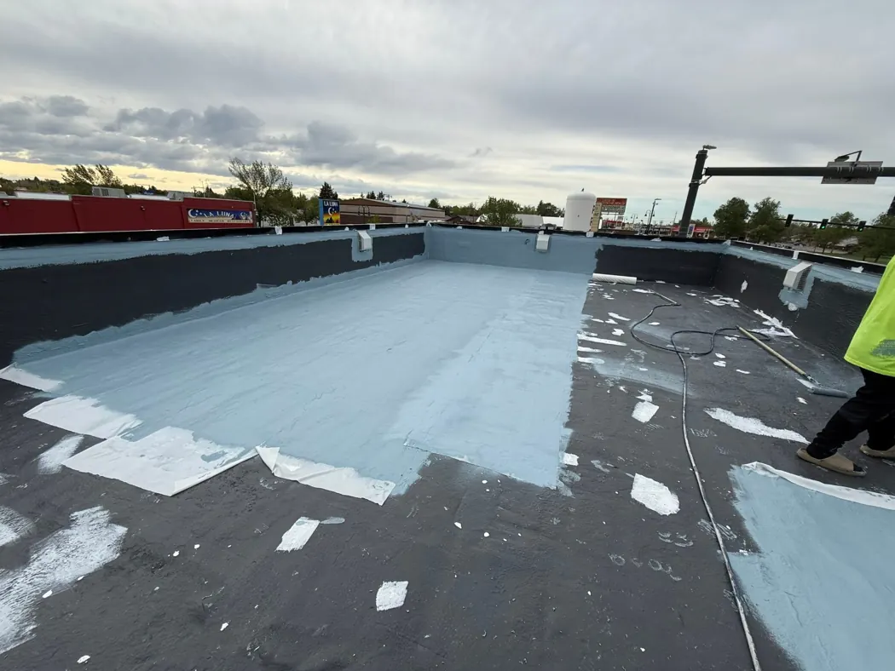

Coating an existing roof
Our crew prepares the surface, works around seams and rooftop equipment, and applies the white finish with a spray rig. Here’s how that work looked on one commercial roof.
Is my roof a candidate?From prep to finish



Planning a coating project
Ask Wade about your roofCan my roof be coated?
The roof material, previous repairs, and places where water collects all matter. If you’ve seen a leak inside the building, tell Wade where it shows up. That gives him a place to start.
Which coating system will be used?
War Horse Roofing is an independent Conklin distributor. The right system depends on the existing roof. Wade can explain the preparation it needs and the warranty terms for that system.
Can we stay open during the work?
That depends on how the crew can reach the roof and when the coating can be applied. Share your operating hours, deliveries, and any access limits so Wade can discuss a schedule with you.